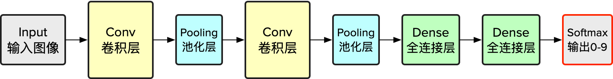
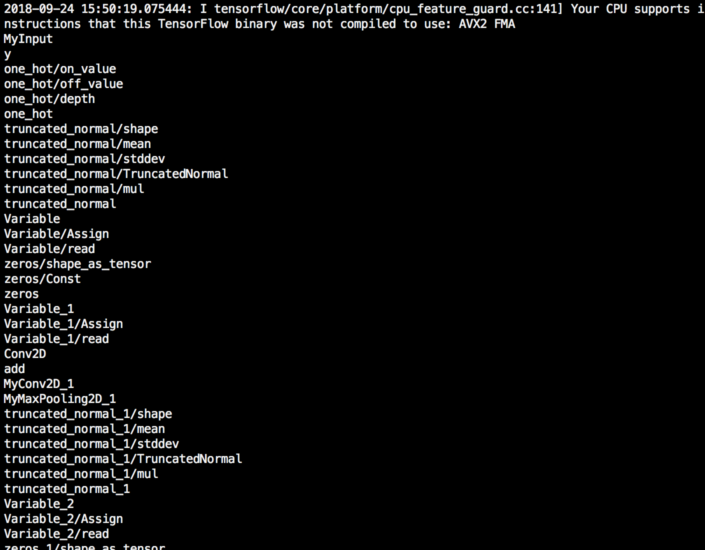

本篇将介绍如何预处理基于 TensorFlow 搭建的神经网络模型 (saved model, frozen model and checkpoint)，以此来适配 TensorSpace 所需要的拥有中间层输出的模型。
本篇教程所使用的代码及模型源文件列表：
filter_center_focus
tensorflow_create_model.py
filter_center_focus
tensorflow_load_model.py
filter_center_focus
tensorflow_conversion.py
filter_center_focus
convert_tensorflow_saved_model.sh
filter_center_focus
convert_tensorflow_frozen_model.sh
filter_center_focus
模型
运行环境：Python 3.6.5。相关依赖如下：
import tensorflow as tf
import numpy as np
from tensorflow.contrib.layers import flatten
from sklearn.utils import shuffle
mnist = tf.keras.datasets.mnist
wb_sunny注意：
- filter_center_focus tensorflow 与 numpy 为核心库.
- filter_center_focus tf.keras 仅用来提供训练所需要的数据集。
- filter_center_focus sklearn.utils 只用于提供 shuffle。
此外，我们还需要安装 tfjs-converter (基于 TensorFlow.js 的转换工具):
$ pip install tensorflowjs
安装完成后，tensorflowjs_converter 变为系统可用关键字，可用下列命令来调用：
$ tensorflowjs_converter \
--input_format=tf_saved_model \
--output_node_names=$onn \
--saved_model_tags=serve \
../models/tensorflow_model \
../models/json_models/tensorflow
预处理 TensorFlow 模型大致上分为以下几个步骤：
图1 - 预处理 TensorSpace 模型的步骤
filter_center_focus
1. 训练/加载模型
filter_center_focus
2. 找出中间层 tensor 名称
filter_center_focus
3. 转换为 TensorSpace 适配的模型
与预处理 Keras 和 tf.keras 模型不同的是，我们不需要额外生成包含中间层输出的嵌入多输出模型。我们只需要提取我们所需要的中间层 tensor 名称（tensor names），然后进行模型格式转换。
wb_sunny注意：
- filter_center_focus 在 TensorSpace 中，所收集的 tensor 名称将保存于 "outputNames" 之中.
1 训练/加载模型
1.1 训练模型
如果您目前还没有可以马上使用的 TensorFlow 模型，可以按照本小节的方法训练一个新的样例模型。
我们将使用 MNIST 数据集以及 LeNet 网络结构为例，使用 TensorFlow 构建一个神经网络模型。（参考 sujaybabruwad/LeNet-in-Tensorflow）
第一步，对训练数据进行预处理，改变训练数据的形状：
# Raw input & normalization
(x_train, y_train),(x_test, y_test) = mnist.load_data()
x_train, x_test = x_train / 255.0, x_test / 255.0
# Match dimensions
x_train = x_train.reshape((-1, 28, 28, 1)).astype(np.float32)
x_test = x_test.reshape((-1, 28, 28, 1)).astype(np.float32)
# Add padding to 32x32
x_train = np.pad(x_train, ((0,0), (2,2), (2,2), (0,0)), 'constant')
x_test = np.pad(x_test, ((0,0), (2,2), (2,2), (0,0)), 'constant')
第二步，根据 LeNet_v5 的网络结构来构建模型

图2 - LeNet 网络结构
网络包括：2个 Conv2D + MaxPooling 的组合，紧接着3层 Dense。
def LeNet_5(x):
# Convolutional Layer. Input = 32x32x1, Output = 28x28x1.
conv1_w = tf.Variable(
tf.truncated_normal(
shape=[5, 5, 1, 6], mean=0, stddev=0.1))
conv1_b = tf.Variable(tf.zeros(6))
conv1 = tf.nn.conv2d(
x, conv1_w, strides=[1, 1, 1, 1], padding='VALID') + conv1_b
conv1 = tf.nn.relu(conv1, name="MyConv2D_1")
# Pooling Layer. Input = 28x28x1. Output = 14x14x6.
pool_1 = tf.nn.max_pool(
conv1, ksize=[1, 2, 2, 1],
strides=[1, 2, 2, 1], padding='VALID',
name="MyMaxPooling2D_1")
# Convolutional. Output = 10x10x16.
conv2_w = tf.Variable(
tf.truncated_normal(
shape=[5, 5, 6, 16], mean=0, stddev=0.1))
conv2_b = tf.Variable(tf.zeros(16))
conv2 = tf.nn.conv2d(
pool_1, conv2_w, strides=[1, 1, 1, 1], padding='VALID') + conv2_b
conv2 = tf.nn.relu(conv2, name="MyConv2D_2")
# Pooling. Input = 10x10x16. Output = 5x5x16.
pool_2 = tf.nn.max_pool(
conv2, ksize=[1, 2, 2, 1],
strides=[1, 2, 2, 1], padding='VALID',
name="MyMaxPooling2D_2")
# Flatten. Input = 5x5x16. Output = 400.
fc1 = flatten(pool_2)
# Fully Connected. Input = 400. Output = 120.
fc1_w = tf.Variable(
tf.truncated_normal(
shape=(400, 120), mean=0, stddev=0.1))
fc1_b = tf.Variable(tf.zeros(120))
fc1 = tf.matmul(fc1, fc1_w) + fc1_b
# Activation.
fc1 = tf.nn.relu(fc1, name="MyDense_1")
# Fully Connected. Input = 120. Output = 84.
fc2_w = tf.Variable(
tf.truncated_normal(
shape=(120, 84), mean=0, stddev=0.1))
fc2_b = tf.Variable(tf.zeros(84))
fc2 = tf.matmul(fc1, fc2_w) + fc2_b
# Activation.
fc2 = tf.nn.relu(fc2, name="MyDense_2")
# Fully Connected. Input = 84. Output = 10.
fc3_w = tf.Variable(
tf.truncated_normal(
shape=(84, 10), mean=0, stddev=0.1))
fc3_b = tf.Variable(tf.zeros(10))
logits = tf.matmul(fc2, fc3_w) + fc3_b
return logits
wb_sunny注意：
- filter_center_focus 建议对需要用 TensorSpace 3D可视化的层（tensor）添加 "name" 属性。这将为我们之后寻找指定 tensor 、生成 "outputNames" 的过程提供极大的便利。
- filter_center_focus 您可能注意到了：我们并没有将“正确的”名称添加到“正确的” tensor 内。例如：我们没有为 tf.nn.conv2d 标记名称为 "MyConv2D_*" 。我们将 tf.nn.relu标记为 "MyConv2D_*" 。这取决于你需要哪一层的层间数据：若你希望获得卷积层后的数据，就对 tf.nn.conv2d 命名；若将卷积层和激励函数看成一个整体，就在tf.nn.relu后添加名称。选择不同的命名方法可能会对所呈现的可视化效果产生不同的影响。
- filter_center_focus 我们只添加了两层 Dense。因为最后的一层 Softmax Dense 将用于之后的训练，所以我们会对其进行不同的处理。
第三步，训练模型
x = tf.placeholder(tf.float32, shape=[None,32,32,1],name="MyInput")
y = tf.placeholder(tf.int32, (None), name="y")
one_hot_y = tf.one_hot(y, 10)
#Invoke LeNet function by passing features
logits = LeNet_5(x)
# All kinds different operations
#Softmax with cost function implementation
cross_entropy \
= tf.nn.softmax_cross_entropy_with_logits_v2(labels=one_hot_y, logits=logits)
loss_operation = tf.reduce_mean(cross_entropy)
optimizer = tf.train.AdamOptimizer(learning_rate=0.001)
training_operation = optimizer.minimize(loss_operation)
correct_prediction = tf.equal(tf.argmax(logits, 1), tf.argmax(one_hot_y, 1))
accuracy_operation = tf.reduce_mean(tf.cast(correct_prediction, tf.float32))
# Declare an actual output without training label dependence
predict_outputs = tf.nn.softmax(logits, name="MySoftMax")
EPOCHS = 5
BATCH_SIZE = 128
# Evaluate function
def evaluate(X_data, y_data):
num_examples = len(X_data)
total_accuracy = 0
sess = tf.get_default_session()
for offset in range(0, num_examples, BATCH_SIZE):
batch_x, batch_y \
= X_data[offset:offset + BATCH_SIZE]\
, y_data[offset:offset + BATCH_SIZE]
accuracy = sess.run(accuracy_operation, feed_dict={x: batch_x, y: batch_y})
total_accuracy += (accuracy * len(batch_x))
return total_accuracy / num_examples
with tf.Session() as sess:
sess.run(tf.global_variables_initializer())
num_examples = len(x_train)
print("Training... with dataset - ", num_examples)
print()
for i in range(EPOCHS):
x_train, y_train = shuffle(x_train, y_train)
for offset in range(0, num_examples, BATCH_SIZE):
end = offset + BATCH_SIZE
batch_x, batch_y = x_train[offset:end], y_train[offset:end]
sess.run(training_operation, feed_dict={x: batch_x, y: batch_y})
validation_accuracy = evaluate(x_test, y_test)
print("EPOCH {} ...".format(i + 1))
print("Validation Accuracy = {:.3f}".format(validation_accuracy))
print()
test_accuracy = evaluate(x_test, y_test)
print("Test Accuracy = {:.3f}".format(test_accuracy))
wb_sunny注意：
- filter_center_focus 我们需要在外部额外声明一个 Softmax tensor 并添加一个合适的名称（"name"），以用于提取预测的最终结果。
下图是训练结果后的输出：

图3 - 训练分析
1.2 加载一个模型
已有预训练模型，直接加载。Tensorflow有三种常见的预训练模型，点击链接查看模型类别详情
saved model：一个.pb文件，并有一个variables文件夹，可能含有assets文件夹。部署时使用此格式
with tf.Session(graph=tf.Graph()) as sess:
tf.saved_model.loader.load(
sess,
[tag_constants.SERVING],
'../models/tensorflow_model',
)
frozen model：又被称为FrozenGraphDef格式，.pb文件。多用于移动端模型
with tf.Session() as sess:
model_filename ='/PATH/TO/PB/model.pb'
with gfile.FastGFile(model_filename, 'rb') as f:
graph_def = tf.GraphDef()
graph_def.ParseFromString(f.read())
g_in = tf.import_graph_def(graph_def)
checkpoint：含有checkpoint文件，文件命名含有关键字ckpt。信息完整，可用于迁移训练
with tf.Session(graph=tf.Graph()) as sess:
dir_path = '../DIR/SAVE/CKPT/'
ckpt_name = 'lenet.ckpt'
saver = tf.train.import_meta_graph(dir_path + ckpt_name + '.meta')
saver.restore(sess, tf.train.latest_checkpoint(dir_path))
wb_sunny注意：
- filter_center_focus 如果需要加载 Checkpoint，需要将所加载的模型保存为 SavedModel 或者 FrozenModel 。因为 tfjs-converter 目前并不支持对于 Checkpoint 的转换适配。
- filter_center_focus 如果需要转换 Checkpoint，运行以下代码段。〔源码〕tensorflow_conversion.py
with tf.Session(graph=tf.Graph()) as sess:
dir_path = '../DIR/SAVE/CKPT/'
ckpt_name = 'lenet.ckpt'
saver = tf.train.import_meta_graph(dir_path + ckpt_name + '.meta')
saver.restore(sess, tf.train.latest_checkpoint(dir_path))
graph = tf.get_default_graph()
# Pick input for SavedModel
x = graph.get_tensor_by_name("input/Placeholder:0")
# Pick output for SavedModel
add_8 = graph.get_tensor_by_name("add_8:0")
output_dir = '/OUTPUT/TO/DIR/'
tf.saved_model.simple_save(
sess, output_dir,
{"input":x},
{"output":add_8}
)
2 找出中间层 tensor 名称
⭐️关键步骤。我们需要找出需要可视化的中间层所对应的 tensor 名称（names）。
使用下面的代码输出所有的 tensor 名称。〔源码〕tensorflow_load_model.py
for n in tf.get_default_graph().as_graph_def().node:
print(n.name)
哪怕模型并不是很大，也可能得到许多 tensor 名称。例如我们在前例中所创建的 LeNet 网络模型，也会输出 400+ 个 tensor 名称：

图4 - Tensor 名称
wb_sunny注意：
- filter_center_focus 并不需要关注所有的 tensor，因为大部分 tensor 是用来提供常数或者为训练模型所服务的。我们需要找出用于预测的关键 tensor。
- filter_center_focus 若您之前构建神经网络时，添加了 "name" 属性，您可以非常快速地找出（确认）它们。这正是我们所希望的。
- filter_center_focus 若您加载了一个来自外部的模型，那么可能需要对该模型的基本结构有所了解。
- filter_center_focus 在绝大多数情况下，tensor 的名称（"name"）与其在 TensorFlow 中构造器紧密相关。
当我们找到所有我们需要的 tensor 名称后，将它们添加到一个列表中。〔源码〕tensorflow_load_model.py
output_names = ["MyConv2D_1", "MyMaxPooling2D_1", "MyConv2D_2", "MyMaxPooling2D_2",
"MyDense_1", "MyDense_2", "MySoftMax"]
使用下列代码测试列表的有效性。〔源码〕，tensorflow_load_model.py
graph = tf.get_default_graph()
x = graph.get_tensor_by_name("MyInput:0")
outputs = list(map(lambda on: graph.get_tensor_by_name(on+":0"), output_names))
print(sess.run(outputs, feed_dict={x:x_test}))
图5 - 模型预处理后的中间层多输出

图6 - 最终输出与原始模型一致
wb_sunny注意：
- filter_center_focus 代码第3行：为每一个 tensor 对象添加 ":0" 。 否则模型将返还 tensor 对象而不是其计算结果。
- filter_center_focus 保存 tensor 名称列表 。我们将在之后使用 TensorSpace 时继续使用（作为 outputNames ）。
3 转换为 TensorSpace 适配的模型
如果一切顺利，我们就可以使用一下脚本来进行模型转换以适配 TensorSpace。
onn='MyConv2D_1,MyMaxPooling2D_1,MyConv2D_2,MyMaxPooling2D_2,MyDense_1,MyDense_2,MySoftMax'
tensorflowjs_converter \
--input_format=tf_saved_model \
--output_node_names=$onn \
--saved_model_tags=serve \
../models/tensorflow_model \
../models/json_models/tensorflow
wb_sunny注意：
- filter_center_focus 请确认 tfjs-converter 正确安装（tensorflowjs_converter --version）。
- filter_center_focus 如果该网络保存为 Checkpoint，您需要先将其转换为 SavedModel 或者 FrozenModel。 tfjs-converter 暂时不支持 Checkpoint 格式。
- filter_center_focus
请根据所保存的预训练模型类型，选择合适的 input_format
- flare input_format=tf_saved_model 对应 saved model
- flare input_format=tf_frozen_model 对应 frozen model
- filter_center_focus 请添加所保存的 tensor 名称列表至 onn（请勿包含任何空格或者引号）。

图7 - 转换后所保存的最终模型文件
wb_sunny注意：
- filter_center_focus
完成转换后，得到三种类型的文件：
- flare tensorflowjs_model.pb：包含网络结构等重要信息。
- flare weights_manifest.json：包含所有权重文件的对应关系。
- flare 权重文件：对应训练所得到的各 tensor 权重信息。权重文件的数量取决于网络的结构。
- filter_center_focus 点击链接 获取更多 tfjs-converter 的信息。
若至此一切顺利，可移步下一部分 ——
加载 TensorSpace 适配模型